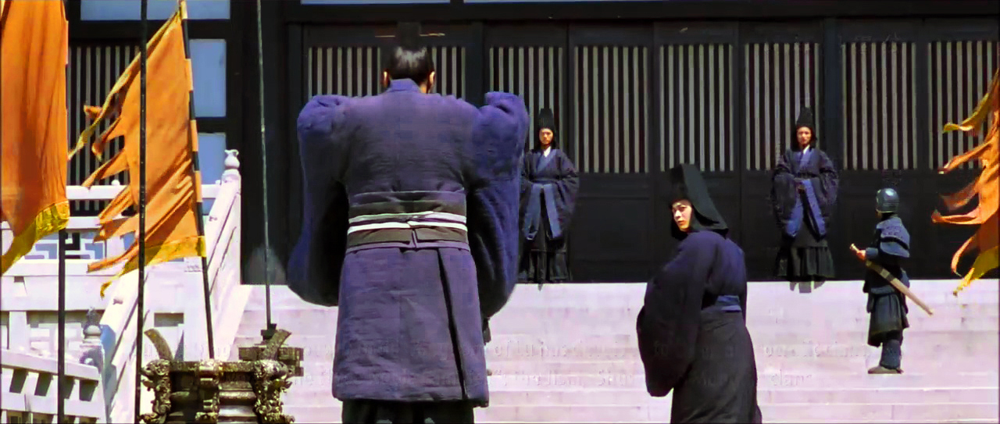

The Foundation of Qin's Power
Shang Yang's reforms in 4th century BCE strengthened Qin's military and economy: rewarding military merit, promoting agriculture, and enforcing strict laws. This made Qin powerful enough to unify China.

The remake of the scene according Shang Yang's reform
Prince 1120 QingrenSJNA